Sony PlayStation 2 (Posse de Gabriel Pires)
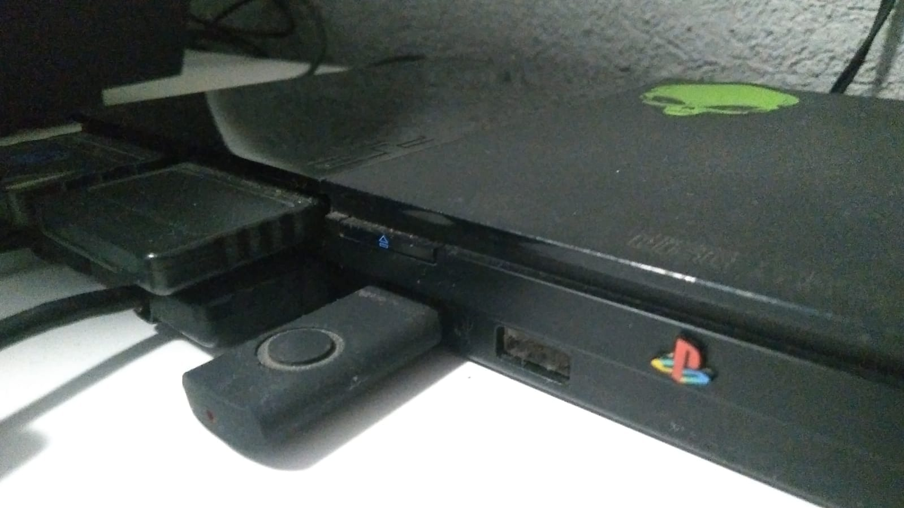
PlayStation 2
O PlayStation 2, também conhecido simplesmente como PS2,
é um console doméstico desenvolvido e fabricado pela Sony
Computer Entertainment.
Lançado originalmente no Japão em 4 de março de 2000,
o console posteriormente chegou à América do Norte,
Europa e outras regiões.
O PS2 pertence à sexta geração dos videogames e sucedeu
o primeiro PlayStation, trazendo uma evolução significativa
em processamento gráfico, capacidade de armazenamento e
reprodução de mídia.
Uma de suas principais características foi a utilização
de discos DVD como mídia para seus jogos. Além de executar
jogos, o console também podia reproduzir filmes em DVD,
tornando-se um aparelho de entretenimento doméstico bastante
versátil para sua época.
Mercado e Popularização
O PlayStation 2 chegou ao mercado em um período de grande
expansão da indústria dos videogames.
A Sony já havia estabelecido uma forte presença no mercado
com o PlayStation original, e o PS2 aproveitou essa base
para continuar a expansão da marca.
O uso do DVD foi um dos grandes diferenciais comerciais
do console. Na época, aparelhos dedicados para reprodução
de DVD ainda possuíam preços relativamente elevados em
determinados mercados, fazendo com que o PS2 fosse visto
também como uma alternativa para reprodução de filmes.
O console também recebeu uma enorme quantidade de jogos
de diferentes gêneros e desenvolvedoras, criando uma das
maiores bibliotecas de software da história dos videogames.
Contexto Histórico
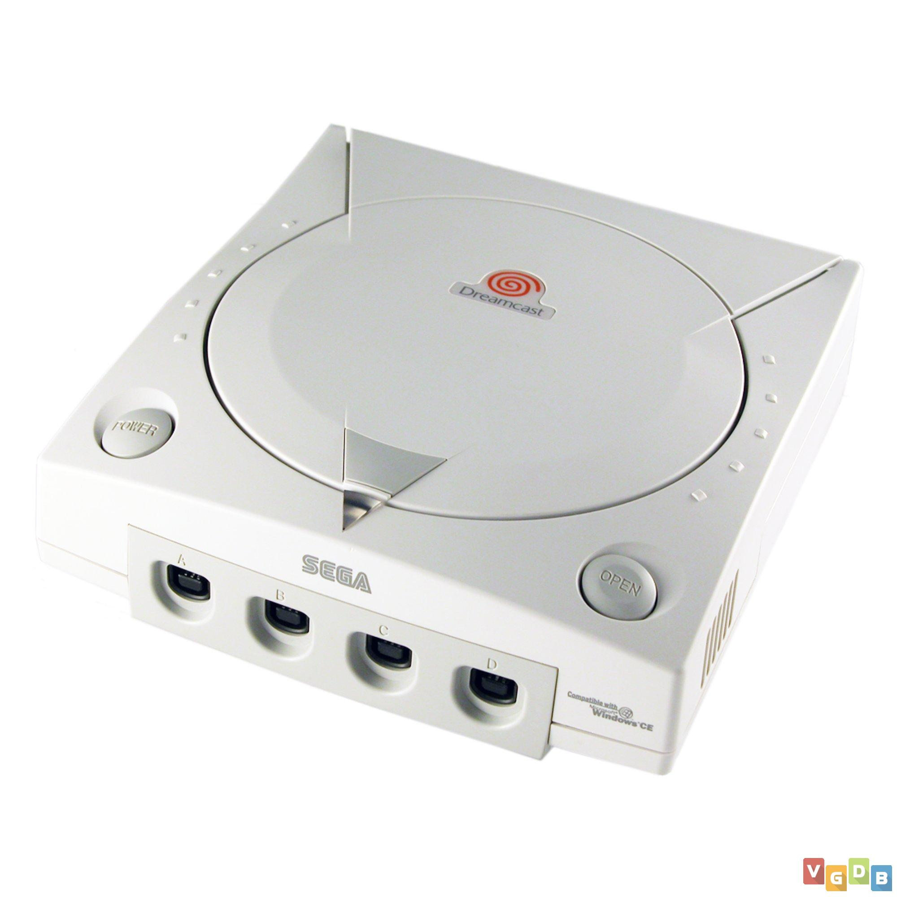
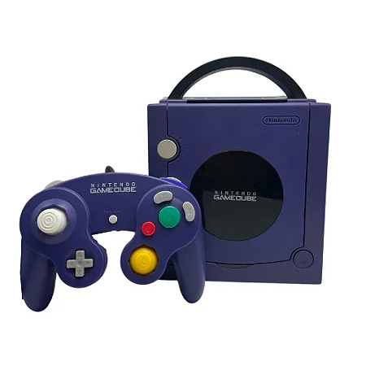
O PlayStation 2 surgiu durante a transição entre a quinta
e a sexta geração dos videogames.
Entre seus concorrentes estavam consoles como o Sega
Dreamcast, lançado antes do PS2, o Nintendo GameCube e
posteriormente o Xbox original da Microsoft.
A sexta geração trouxe grandes avanços gráficos em relação
aos consoles anteriores, permitindo mundos tridimensionais
maiores, personagens mais detalhados e sistemas de física
e inteligência artificial mais elaborados.
O PS2 acabou se tornando uma das plataformas mais importantes
desse período, recebendo jogos de grandes franquias e também
estabelecendo novas séries que posteriormente continuariam
em outras plataformas.
Essa geração também marcou uma expansão significativa dos
jogos tridimensionais e da utilização de mídias ópticas
com maior capacidade de armazenamento.
Jogos e Acessórios
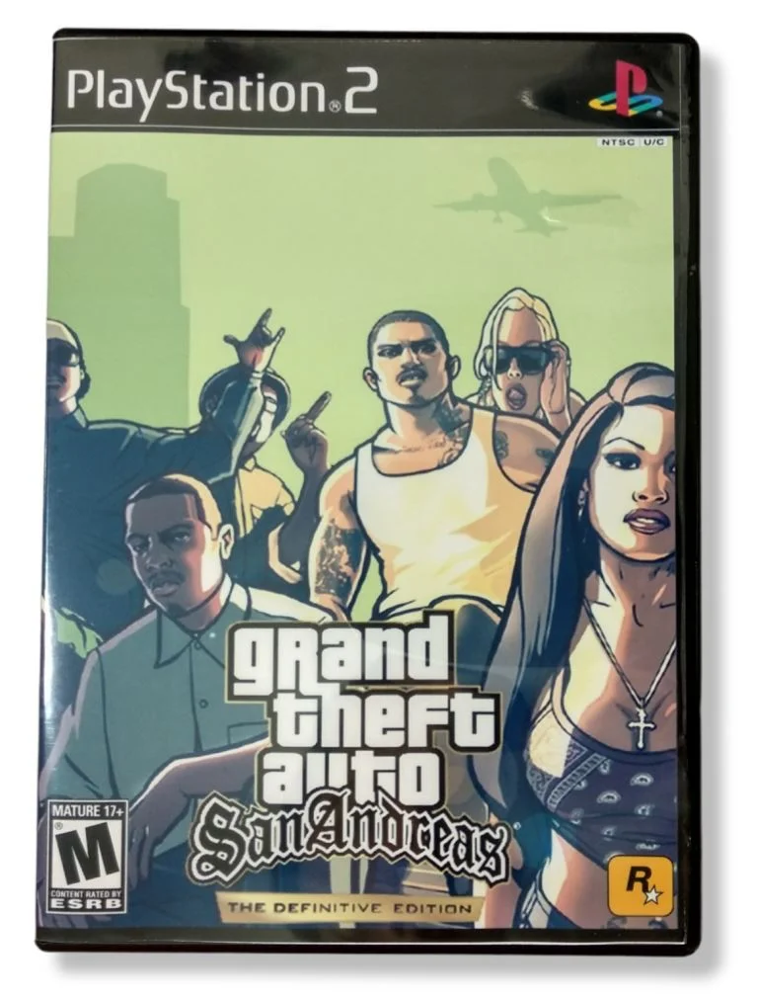
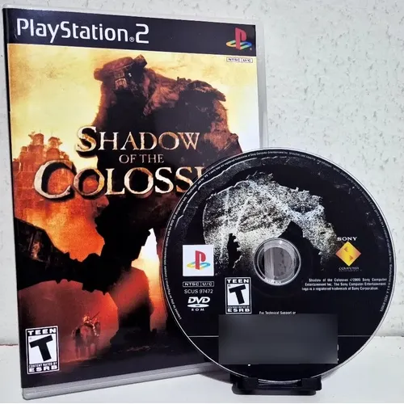
O PlayStation 2 recebeu uma enorme quantidade de jogos
durante sua vida comercial, abrangendo praticamente todos
os gêneros disponíveis na época.
Entre os títulos mais conhecidos estão Grand Theft Auto III,
Grand Theft Auto: Vice City, Grand Theft Auto: San Andreas,
God of War, Metal Gear Solid 2, Metal Gear Solid 3,
Gran Turismo 3, Gran Turismo 4, Final Fantasy X,
Kingdom Hearts, Resident Evil 4, Shadow of the Colossus,
Devil May Cry, Tekken 5 e muitos outros.
O console também recebeu diversos acessórios, incluindo
cartões de memória, controles DualShock 2, multitap,
câmeras EyeToy, guitarra para jogos musicais, microfones,
volantes e outros periféricos.
O cartão de memória era utilizado para armazenar o progresso
dos jogos, enquanto o DualShock 2 se tornou o principal
controle associado ao sistema.
Modelos e Variações
Durante sua longa vida comercial, o PlayStation 2 recebeu
diversas revisões de hardware.
O modelo original ficou conhecido popularmente como
"Fat" devido ao seu formato maior e mais robusto.
Posteriormente, a Sony lançou o PlayStation 2 Slim,
que apresentou uma redução significativa no tamanho
e no peso do console.
Também existiram diversas revisões internas desses modelos,
identificadas principalmente pelos números de modelo
SCPH utilizados pela Sony.
Além dos modelos oficiais, o PlayStation 2 também recebeu
diferentes versões de acabamento e edições especiais
produzidas para determinados mercados.
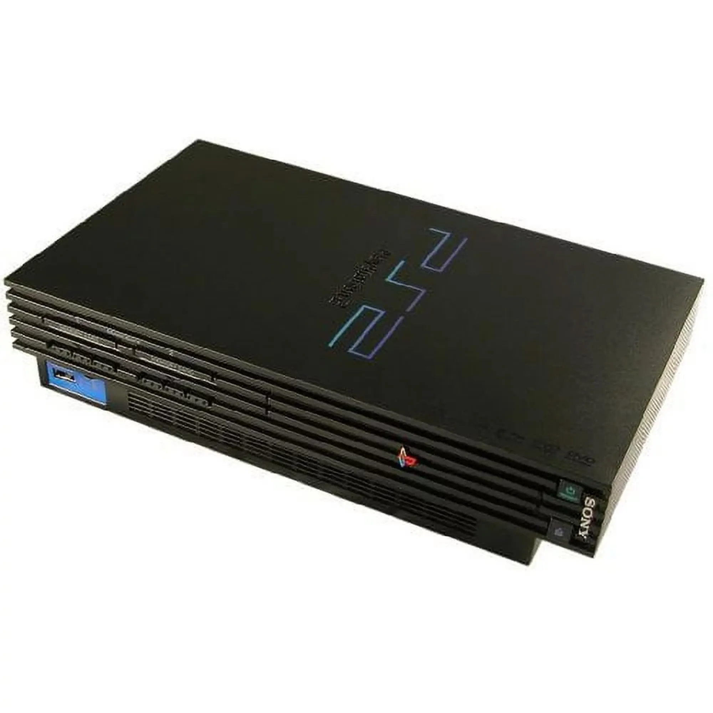
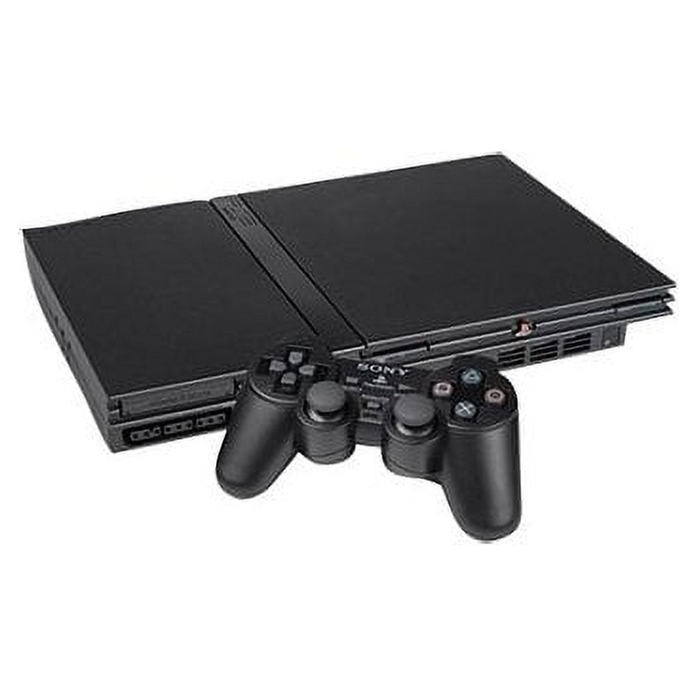
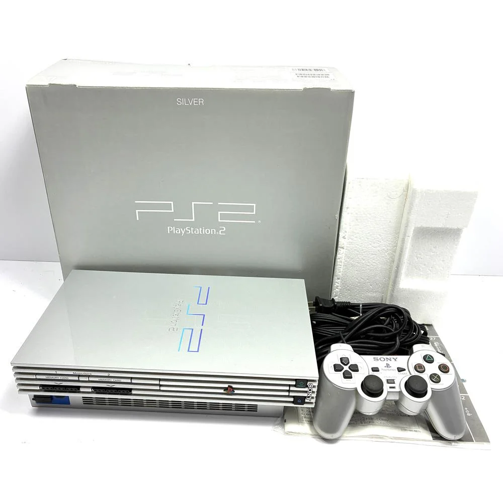
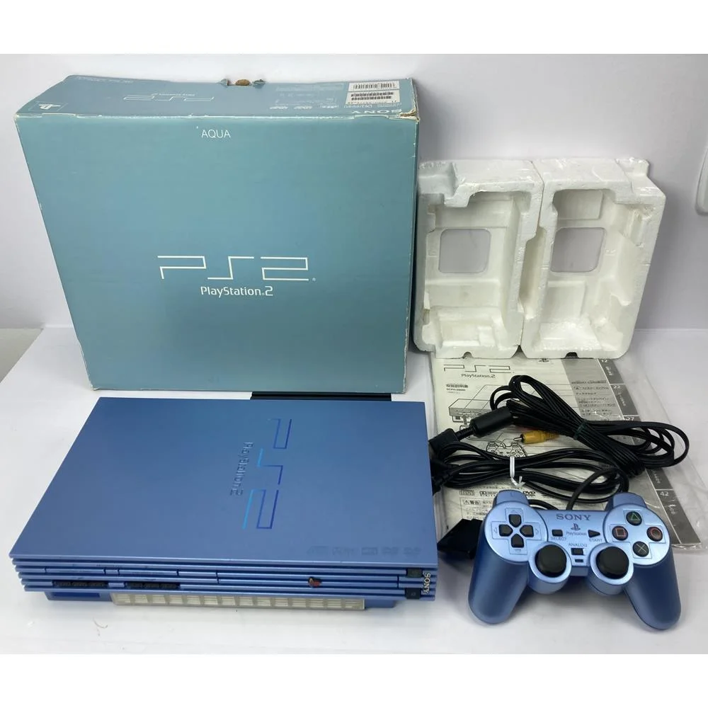
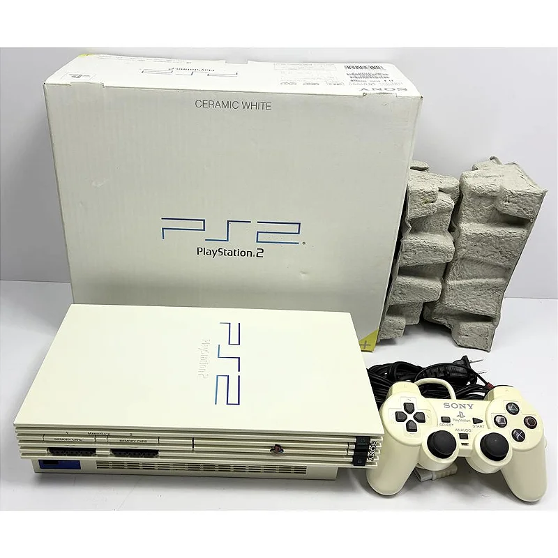
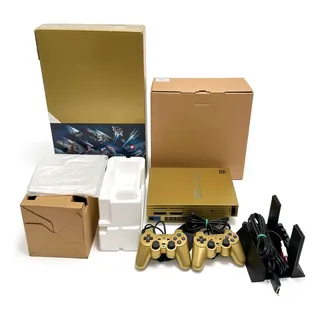
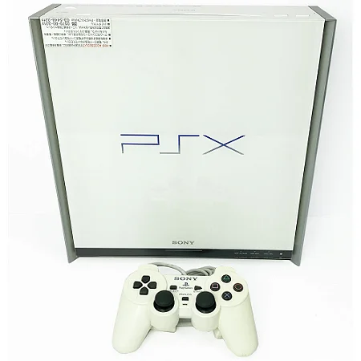
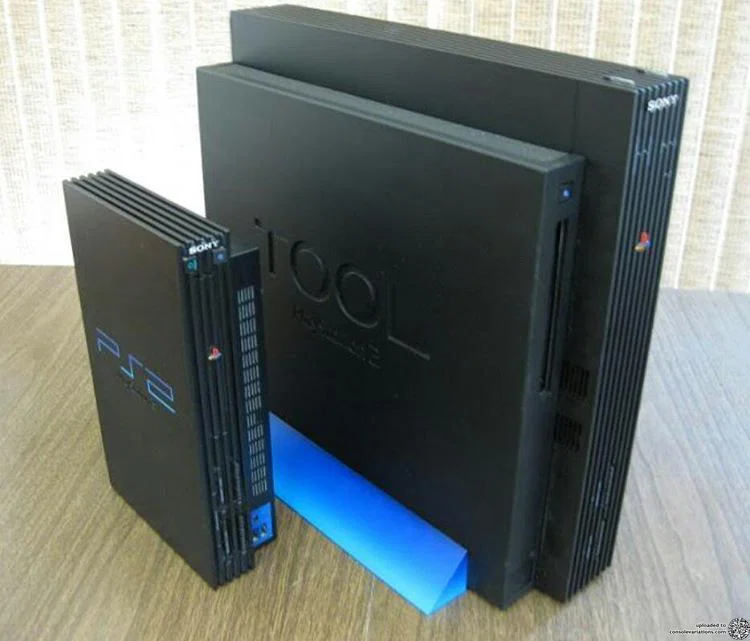